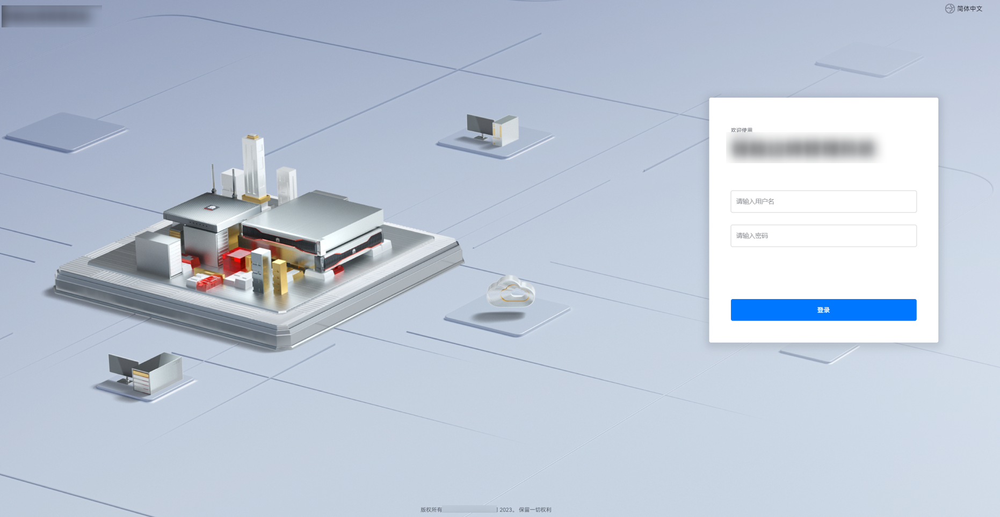

前提条件
- 请使用Google Chrome 69及以上版本的浏览器。
- http为不安全协议，请使用安全协议https登录。
注意事项
- 首次登录时，为保证系统的安全性，登录成功后，系统会提示修改密码，请按照提示修改初始密码，并定期更新。
- 固件升级后首次登录时，请按“F5”刷新页面。
- 连续5次输入错误的密码（帐号正确）后，系统将对此用户进行锁定。等待5分钟后，方可重新登录。如果帐号错误，只会提示用户名或密码错误，不会锁定该错误帐号。
- 若忘记密码，可通过恢复出厂设置重置。也可以在纳管边缘设备的FusionDirector上重置边缘管理系统界面帐号密码，详细操作请参见《FusionDirector 操作指南》中的“管理设备 > 管理接入设备 > 管理边缘设备”章节的重置设备密码部分。
- 默认情况下，系统超时时间为15分钟，即在15分钟内，如果您未在Web界面执行任何操作，系统将自动登出。
操作步骤
下面以Windows 10操作系统的PC以及Google Chrome 81.0浏览器为例进行操作步骤描述。
- 连接线缆，配置网络环境。
- 使用以太网线缆，将PC端与边缘设备的用途为“web”的网口直接连接，或者通过交换机连接。
- 配置PC端的网口IP地址和子网掩码，使之能访问边缘设备。

建议将PC端网口IP地址设置为与边缘设备管理网口IP地址在同一网段内。如果不在同一网段内，确保正确配置路由使两者能够互通。
- 打开Google Chrome浏览器，在地址栏中输入“https://XXX.XXX.XXX.XXX”并按“Enter”，弹出登录界面。
- XXX.XXX.XXX.XXX代表边缘管理系统的Web的访问IP地址，网口0的默认IP地址为192.168.2.111，网口1~4的默认IP地址为192.168.3.111。
- 如果浏览器显示“此网站的安全证书有问题”，请单击“继续浏览此网站(不推荐)”。根据所使用的Google Chrome版本不同，浏览器页面显示存在差异，以实际页面显示信息为准。
图1 登录边缘管理系统
 - 选择界面语言。图2 选择界面语言

- 输入用户名和密码。用户名和密码请参见《Atlas硬件产品 用户清单》中的“Atlas 200I A2 加速模块”。
- 单击“登录”。
- 在弹出的修改窗口中，输入原密码、新密码、确认密码并单击“确认”，完成用户密码修改。图3 修改用户密码

- 在登录界面，再次输入用户名和新的密码。
- 单击“登录”。
登录成功后，进入“首页”界面。